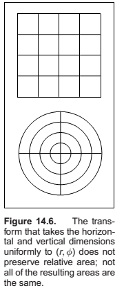
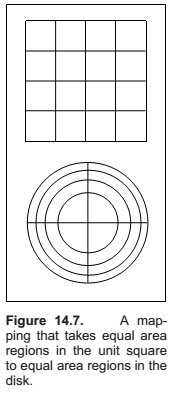
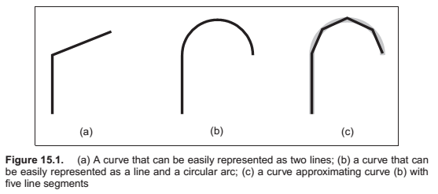
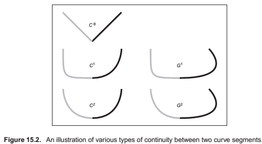

Chapter 14 : Sampling
Integration
Although the words “integral” and “measure” often seem intimidating, they relate to some of the most intuitive concepts found in mathematics, and they should not be feared.
For example, on the 2D real plane $R^2$, we have the area measure $A$ which assigns a value to a set of points in the plane. Note that $A$ is just a function that takes pieces of the plane and returns area. This means the domain of $A$ is all possible subsets of $R^2$, which we denote as the power set $P(R^2)$. Thus, we can characterize $A$ in arrow notation:
$$\begin{align}
& A : \mathcal P(\mathbb R^2) \to \mathbb R^+. \
& A([a, a+1]\times [b, b + 1]) = 1,
\end {align}$$
To be considered a measure, a function has to obey certain area-like properties.
For example, we have a function $\mu : P(S) \to R^+$. For $\mu$ to be a measure, the following conditions must be true:
- The measure of the empty set is zero: $\mu(\phi) = 0$,
- The measure of two distinct sets together is the sum of their measure alone.
This rule with possible intersections is
$$\begin{align} \mu (A \cup B) = \mu (A) + \mu(B) − \mu(A \cup B), \end {align}$$
where $\mu$ is the set union operator and $\mu$ is the set intersection operator.
When we actually compute measures, we usually use integration.
$$\begin{align} A(S) = \int_{x\in S}dA(\mathbf x). \end {align}$$
Measures and Averages
$$\begin{align} average(f) = \frac{\int_{x \in S}f(\mathbf x),d\mu(\mathbf x)}{\int_{x \in S}d\mu(\mathbf x)}. \end {align}$$
Continuous Probability
One-Dimensional Continuous Probability Density Functions
Loosely speaking, a continuous random variable $x$ is a scalar or vector quantity that “randomly” takes on some value from the real line $R = (−\infty, +\infty)$. The behavior of $x$ is entirely described by the distribution of values it takes. This distribution of values can be quantitatively described by the probability density function (pdf), $p$, associated with $x$ (the relationship is denoted $x \sim p$). The probability that $x$ assumes a particular value in some interval
$[a, b]$ is given by the following integral:
$$\begin{align} Probability(x \in [a, b]) = \int_a^b p(x),dx. \end {align}$$
The probability distribution function has two characteristics,
$$\begin{align}
p(x) \geq 0\quad \text{(probability is non-negative)}, \
\int_{-\infty}^{+\infty}p(x),dx = 1 \quad (Probability(x \in \mathbb R) = 1).
\end {align}$$
One-Dimensional Expected Value
The average value that a real function $f$ of a one-dimensional random variable with underlying pdf $p$ will take on is called its expected value, $E(f(x))$ (sometimes written $Ef(x)$):
$$\begin{align}
E(f(x)) = \int f(x)p(x)dx. \
E(x+y) = E(x) + E(y) \
\text{also,} \
E(f(x) + g(y)) = E(f(x)) + E(g(y)).
\end {align}$$
Multi-Dimensional Random Variables
The discussion of random variables and their expected values extends naturally to multi-dimensional spaces. Most graphics problems will be in such higher dimensional spaces. For example, many lighting problems are phrased on the surface of the hemisphere. Fortunately, if we define a measure $\mu$ on the space the random variables occupy, everything is very similar to the one-dimensional case.
Variance
The variance, $V (x)$, of a one-dimensional random variable is, by definition, the expected value of the square of the difference between $x$ and $E(x)$:
$$\begin{align}
V(x) \equiv E([x - E(x)]^2) .
\end {align}$$
Some algebraic manipulation gives the non-obvious expression:
$$\begin{align}
V(x) = E(x^2) - [E(x)]^2 .
\end {align}$$
Estimated Means
Many problems involve sums of independent random variables $x_i$, where the variables share a common density $p$. Such variables are said to be independent identically distributed (iid) random variables. When the sum is divided by the number of variables, we get an estimate of $E(x)$:
$$\begin{align}
& E(x) \approx \frac{1}{N}\sum_{i=1}^{N}x_i, \
& Probability\left[E(x) = \lim_{N\to\infty}\sum_{i=1}^{N}x_i \right] = 1.
\end {align}$$
Monte Carlo Integration
In this section, the basic Monte Carlo solution methods for definite integrals are outlined. These techniques are then straightforwardly applied to certain integral problems. All of the basic material of this section is also covered in several of the classic Monte Carlo texts.
$$\begin{align} E(f(x)) = \int_{x\in S}f(x)p(x)d\mu \approx \frac1N\sum_{i=1}^{N}x_i, \end {align}$$
Quasi–Monte Carlo Integration
A popular method for quadrature is to replace the random points in Monte Carlo integration with quasi-random points. Such points are deterministic, but are in some sense uniform.
Quasi-random points can improve performance in many integration applications. Sometimes care must be taken to make sure that they do not introduce aliasing. It is especially nice that, in any application where calls are made to random or stratified points in $[0, 1]^d$, one can substitute $d$-dimensional quasi-random points with no other changes.
Choosing Random Points
We often want to generate sets of random or pseudorandom points on the unit square for applications such as distribution ray tracing. There are several methods for doing this, e.g., jittering (see Section 13.4). These methods give us a set of $N$ reasonably equi-distributed points on the unit square $[0, 1]^2 : (u_1, v_1)$ through $(u_N, v_N)$.
Sometimes, our sampling space may not be square (e.g., a circular lens), or may not be uniform (e.g, a filter function centered on a pixel). It would be nice if we could write a mathematical transformation that would take our equidistributed points $(u_i, v_i)$ as input and output a set of points in our desired sampling space with our desired density. For example, to sample a camera lens, the transformation would take $(u_i, v_i)$ and output $(r_i, \phi_i)$ such that the new points are approximately equidistributed on the disk of the lens. While we might be tempted to use the transform
$$\begin{align}
\varphi_i &= 2\pi,u_i, \
r_i &= v_iR,
\end {align}$$
it has a serious problem. While the points do cover the lens, they do so nonuniformly (Figure 14.6). What we need in this case is a transformation that takes equal-area regions to equal-area regions—one that takes uniform sampling distributions on the square to uniform distributions on the new domain.
There are several ways to generate such non-uniform points or uniform points on non-rectangular domains, and the following sections review the three most often used: function inversion, rejection, and Metropolis.

Function Inversion

Rejection
A rejection method chooses points according to some simple distribution and rejects some of them that are in a more complex distribution.
Metropolis
The Metropolis method uses random mutations to produce a set of samples with a desired density. This concept is used extensively in the Metropolis Light Transport algorithm referenced in the chapter notes. Suppose we have a random point $x_0$ in a domain $S$. Further, suppose for any point $x$, we have a way to generate random $y \sim p_x$. We use the marginal notation $p_x(y) \equiv p(x \to y)$ to denote this density function. Now, suppose we let $x_1$ be a random point in $S$ selected with underlying density $p(x_0 \to x_1)$. We generate $x_2$ with density $p(x_1 \to x_0)$ and so on. In the limit, where we generate an infinite number of samples, it can be proved that the samples will have some underlying density determined by $p$ regardless of the initial point $x_0$.
Chapter 15 : Curves
Intuitively, think of a curve as something you can draw with a pen. The curve is the set of points that the pen traces over an interval of time. While we usually think of a pen writing on paper (e.g., a curve that is in a 2D space), the pen could move in 3D to generate a space curve, or you could imagine the pen moving in some other kind of space.
Mathematically, definitions of curve can be seen in at least two ways:
- The continuous image of some interval in an n-dimensional space.
- A continuous map from a one-dimensional space to an n-dimensional space.
Generally, we think of curves as the outlines of things, not the “insides.” The problem that we need to address is how to specify a curve—to give a name or representation to a curve so that we can represent it on a computer. For some curves, the problem of naming them is easy since they have known shapes: line segments, circles, elliptical arcs, etc. A general curve that does not have a “named” shape is sometimes called a free-form curve. Because a free-form curve can take on just about any shape, they are much harder to specify.
There are three main ways to specify curves mathematically:
-
Implicit curve representations define the set of points on a curve by giving a procedure that can test to see if a point in on the curve. Usually, an implicit curve representation is defined by an implicit function of the form $f(x, y) = 0,$ so that the curve is the set of points for which this equation is true. Note that the implicit function $f$ is a scalar function (it returns a single real number).
-
Parametric curve representations provide a mapping from a free parameter to the set of points on the curve. That is, this free parameter provides an index to the points on the curve. The parametric form of a curve is a function that assigns positions to values of the free parameter. Intuitively, if you think of a curve as something you can draw with a pen on a piece of paper, the free parameter is time, ranging over the interval from the time that we began drawing the curve to the time that we finish. The parametric function of this curve tells us where the pen is at any instant in time: $(x, y) = \mathbf f(t)$.
Note that the parametric function is a vector-valued function. This example is a 2D curve, so the output of the function is a 2-vector; in 3D it would be a 3-vector. -
Generative or procedural curve representations provide procedures that can generate the points on the curve that do not fall into the first two categories. Examples of generative curve descriptions include subdivision schemes and fractals.
Parameterizations and Re-Parameterizations
A parametric curve refers to the curve that is given by a specific parametric function over some particular interval. To be more precise, a parametric curve has a given function that is a mapping from an interval of the parameters. It is often convenient to have the parameter run over the unit interval from 0 to 1. When the free parameter varies over the unit interval, we often denote the parameter as $u$.
If we are given a function $\mathbf f(t)$ that specifies a curve over interval $[a, b]$, we can easily define a new function $\mathbf f_2(u)$ that specifies the same curve over the unit interval. We can first define
$$ g(u) = a + (b − a)u,$$
and then
$$ \mathbf f_2(u) = \mathbf f(g(u)).$$
The two functions, $\mathbf f$ and $\mathbf f_2$ both represent the same curve; however, they provide different parameterizations of the curve. The process of creating a new parameterization for an existing curve is called re-parameterization, and the map ping from old parameters to the new ones (g, in this example) is called the re-parameterization function.
Piecewise Parametric Representations

For some curves, defining a parametric function that represents their shape is easy. For example, lines, circles, and ellipses all have simple functions that define the points they contain in terms of a parameter. For many curves, finding a function that specifies their shape can be hard. The main strategy that we use to create complex curves is divide-and-conquer: we break the curve into a number of simpler smaller pieces, each of which has a simple description.
One advantage to using a piecewise representation is that it allows us to make a tradeoff between
- how well our represented curve approximates the real shape we are trying to represent;
- how complicated the pieces that we use are;
- how many pieces we use.
Splines
Before computers, when draftsmen wanted to draw a smooth curve, one tool they employed was a stiff piece of metal that they would bend into the desired shape for tracing. Because the metal would bend, not fold, it would have a smooth shape. The stiffness meant that the metal would bend as little as possible to make the desired shape. This stiff piece of metal was called a spline.
For us, a spline is a piecewise polynomial function. Such functions are very useful for representing curves.
Curve Properties
To describe a curve, we need to give some facts about its properties. For “named” curves, the properties are usually specific according to the type of curve. For example, to describe a circle, we might provide its radius and the position of its center. For an ellipse, we might also provide the orientation of its major axis and the ratio of the lengths of the axes. For free-form curves however, we need to have a more general set of properties to describe individual curves.
Some properties of curves are attributed to only a single location on the curve, while other properties require knowledge of the whole curve. For an intuition of the difference, imagine that the curve is a train track. If you are standing on the track on a foggy day you can tell that the track is straight or curved and whether or not you are at an end point. These are local properties. You cannot tell whether or not the track is a closed curve, or crosses itself, or how long it is. We call this type of property, a global property.
Local properties are important tools for describing curves because they do not require knowledge about the whole curve. Local properties include
- continuity,
- position at a specific place on the curve,
- direction at a specific place on the curve,
- curvature (and other derivatives).
Continuity
We call the condition that the curve pieces fit together continuity conditions because if they hold, the curve can be drawn as a continuous piece.
In general, we say that a curve is $C_n$ continuous if all of its derivatives up to $n$ match across pieces. We denote the position itself as the zeroth derivative, so that the $C_0$ continuity condition means that the positions of the curve are continuous, and $C_1$ continuity means that positions and first derivatives are continuous. The definition of curve requires the curve to be $C_0$.

An illustration of some continuity conditions is shown in Figure 15.2. A discontinuity in the first derivative (the curve is $C_0$ but not $C_1$) is usually noticeable because it displays a sharp corner. A discontinuity in the second derivative is sometimes visually noticeable. Discontinuities in higher derivatives might matter, depending on the application. For example, if the curve represents a motion, an abrupt change in the second derivative is noticeable, so third derivative continuity is often useful. If the curve is going to have a fluid flowing over it (for example, if it is the shape for an airplane wing or boat hull), a discontinuity in the fourth or fifth derivative might cause turbulence.
Polynomial Pieces
Polynomial Notation
– Not documented!!–
Chapter 17 : Computer Animation
- Derives from latin Anima, meaning the act of imparting life or motion or activity.
- Keyframing, the animator provides necessary data in time..
- Procedural, empirical mathematical functions whose output defines some particular motion.
- Physics-based, involves solving differential equaions.
- Motion capture, involves techniques for capturing real world motion data and transfer it to computer models.
Principals of Animation
- squash and stretch; timing; anticipation; follow through and overlapping action; slow-in and slow-out; staging; arcs; secondary action; straight-ahead; pose-to-action; exaggeration; solid drawing skill; appeal;
- Timing
- Action layout, anticipation, action overlap, follow through
- Animation Techniques, squash and stretch to impart motion, direction and elastic properties,. use arcs, slow in slow out, pose to pose action
- Animator controls, vs automatic methods,
- Keyframing
- Motion Controls
- Interpolating Rotation
- Deformations
- Character Animation
- Skeleton, as a hierarchical structure
- Forward kinematics, technique for evaluating skeleton structures, same as matrix stack.
- Inverse kinematics, is then used in case the animator gives the effective motion at the end points and expects other joints to “move on their own”
- Facial Animation,
- Motion Capture
- Physics-Based Animation
- Procedural techniques
- game of life
- Groups of Objects
- Autonomous objects,
- flocking
- particle systems